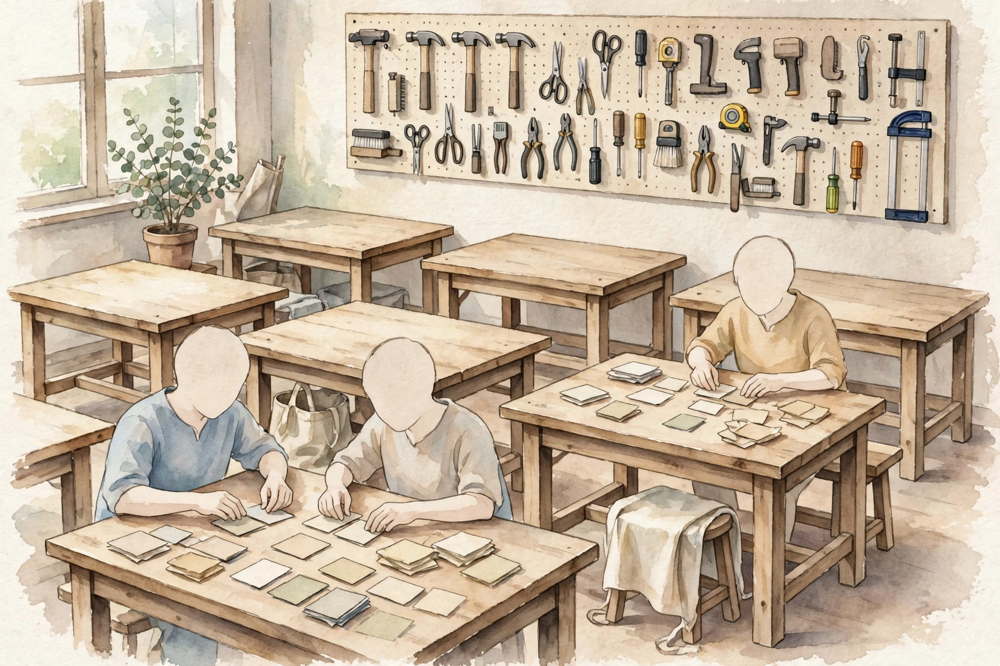

Companion · AIP-C01 prerequisite · narrated from the source volume
This companion walks the AIF-C01 crash course volume end to end: the exam shape, the five domains, the decision trees, the traps, and the practice set.
SOURCE / INTERPRETATION: HOW TO READ THE TAGS
From the lesson SOURCE: the idea, and every number beside it, comes from the cited section of the source. The phrasing is the companion's.
Illustration INTERPRETATION: invented by the companion: an analogy, a toy with made-up values, or a what-if. Never source content.
companion INTERPRETATION: companion voice: the idea above the tag is from the source. The generalization below it is the companion's.

From the lessonThe exam in 30 seconds
The AIF-C01 exam has 65 questions in 90 minutes. Fifty questions count. Fifteen questions carry no score, and no mark tells a candidate apart from a scored one. The pass mark is 700 out of 1000. The score is compensatory: strength in one domain offsets weakness in another, and no domain has a pass mark of its own. The pace works out to about 83 seconds per question.
The fee is 100 US dollars. The credential stays valid for 3 years. A candidate sits the exam at a Pearson VUE test center or under online proctor supervision. Formats cover multiple choice, multiple response, ordering, matching, and case study items. No item gives partial credit. An unanswered item counts as wrong, so a guess costs nothing.
From the lessonThe exam in 30 seconds
Each item is a short business scenario. Two or three options name real AWS services that do a real job, but not this job. One option fits every constraint in the stem. The source method is plain: read the last sentence first, then scan for the decide word. Private data points to retrieval-augmented generation, or RAG. Take actions points to agents. Cheapest points to prompt work or batch inference. Code, data work, feature work, tuning, ML pipelines, and deep security frameworks sit out of scope. The exam tests judgment, not build skill.
Domain weights, AIF-C01
Share of the exam per domain, with scored items out of 50
| Domain | Weight | Scored items of 50 |
|---|---|---|
| D1 Fundamentals of AI and ML | 20% | about 10 |
| D2 Fundamentals of Generative AI | 24% | about 12 |
| D3 Applications of Foundation Models | 28% | about 14 |
| D4 Guidelines for Responsible AI | 14% | about 7 |
| D5 Security, Compliance, and Governance | 14% | about 7 |
From the lessonThe exam in 30 seconds Source: the domain weight table in the source volume. Domains 2 and 3 sum to 52 percent.
From the lessonHow to use this volume
The volume sets three rungs. The 20 minute rung covers the exam summary and the three decision trees: customization, inference, and the service map. The 3 hour rung covers one domain at a time, with each knowledge check done before a move to the next domain. The 1 day rung covers all 20 practice questions, plus a fresh read of each section a miss points to. Each rung has an exit test. A rung counts only after a pass on its test.
The volume also names one video pass of about 50 minutes. The video walks ML basics, transformers, tokens and embeddings, Bedrock model selection and price, temperature and top-p, and prompt craft. The video ends with RAG and vector databases.
From the lessonD1, Ladder 1
AI is the outer circle: machines at tasks that need human-like judgment. Machine learning sits inside AI. A machine learning system learns a pattern from examples in place of hand rules. Deep learning sits inside machine learning: neural networks with many layers do the work. Generative AI sits at the center: deep learning that creates new text, images, or audio. Agentic AI sits at the center too. An agentic system takes actions through tools, not text alone.
From the lessonD1, Ladder 2
Supervised learn uses an answer key. Each example carries a label, and the model learns to label new examples. Supervised work splits in two: classification predicts a category, and regression predicts a number. Unsupervised learn has no key. The model finds groups on its own, or it compresses data to core parts. Reinforcement learn has no key either. An agent acts, the world answers with a reward or a penalty, and the agent adjusts. RLHF is reinforcement learn with human ranks as the reward signal. RLHF aligns chat models with human preference.
From the lessonD1, Ladder 3
Train is the learn phase. Inference is the use phase: a finished model predicts on new data. Train runs once or on a cycle. Inference runs at each use. Two failure modes sit at the poles. Overfit means the model took in the train data, noise and all, and fails on new data: low train error, high test error. Underfit means the model is too plain to catch the pattern: high error on both sets. High bias maps to underfit. High variance maps to overfit. More data or a plain model helps overfit. Richer features or a larger model helps underfit.
Three model metrics come off a confusion matrix. Accuracy is the share correct overall. Precision is the share of flagged items that truly are positive. Recall is the share of true positives that the model flags. The source works one fraud case: 100 transactions hold 10 real frauds. The model flags 8 items, and 6 flags are true. True positives equal 6, false positives equal 2, false negatives equal 4, and true negatives equal 88. Accuracy equals 0.94. Precision equals 0.75. Recall equals 0.60. Business metrics sit above model metrics: task completion rate, user satisfaction, and cost per prediction.
From the lessonD1, Ladder 4
Real-time inference answers one request in milliseconds. Batch inference scores millions of rows on a schedule. Asynchronous inference takes one large payload, such as a two hour video, and returns the result minutes later. Serverless inference drops server care, scales to zero at idle, and charges per use, so spiky traffic fits. Bedrock adds three flavors of its own: on-demand at a per token price, provisioned throughput as kept capacity for steady heavy load, and cross-region inference for route across regions.
From the lessonD1, Ladder 5
The first split is build or borrow. Train a model from own data points to SageMaker AI. A ready foundation model through an API points to Bedrock. Specialist services do one job each. Comprehend finds insight in text. Translate changes language. Kendra searches documents. Transcribe turns speech to text. Polly turns text to speech. Rekognition reads images and video. Textract reads text from documents. Lex builds chatbots. Personalize recommends. Q in QuickSight answers business questions over data. S3 and Glue hold and prepare data, and MLOps keeps the whole chain in production. AI is the wrong answer in three cases: a fixed rule solves the task, no label data exists and none can come, or the cost beats the value.
From the lessonD2, Ladder 1
Models read tokens, not words. A token is a text chunk below word size. The context window is the work memory of the model: prompt, documents from retrieval, and chat history share one cap. Content past the cap drops from the oldest end. Price is per token, in and out. Output tokens cost more, because text creation burns more compute. Prompt cache stores repeat prompt parts, so a full price lands once and a discount lands after.
The source works one request at round prices: 3 dollars per million input tokens and 15 dollars per million output tokens. Input cost for 2,000 tokens equals 0.006 dollars. Output cost for 500 tokens equals 0.0075 dollars. The total equals 0.0135 dollars per request. The output half holds fewer tokens and costs more money. The cost playbook follows: a smaller model, shorter outputs, and cache.
From the lessonD2, Ladder 2
An embedding turns text into a list of numbers, a vector, and the vector holds sense. Near vectors hold near sense. Semantic search puts that geometry to work: embed the question, then fetch the store vectors near the question vector. The fetch half of RAG rests on this move. One rule binds the whole design: one model must embed at ingest time and at query time. Each model owns a private vector space, and vectors from two models do not compare. Vector stores on AWS cover OpenSearch Service, Aurora or RDS for PostgreSQL, and Neptune. Bedrock Knowledge Bases chunks S3 documents before the embed step, and chunk quality sets retrieval quality.
From the lessonD2, Ladder 3
The Transformer reads a whole sentence at once, then predicts one token at a time. The encoder reads the input and builds a rich form of it. The decoder writes the output token by token. Attention links the two halves: at each output token, the model looks back and weighs which input parts matter most. Self-attention works inside one sentence. Each word weighs each other word, so a pronoun links to the noun sense picks, not the noun near it. The exam tests this idea, not the math.
From the lessonD2, Ladder 4
Diffusion models make images from text. The process starts from pure noise and strips noise step by step under the guide of the text, and a picture forms. Multimodal models take and make more than one input kind: text, images, and audio in one system. Embeddings bridge the kinds: text and images map into one shared space, and the model can reason across both. Task match stays crisp: text creation means a large language model, image creation from text means diffusion, and similar document search means an embedding model.
From the lessonD2, Ladder 5
A foundation model is a large model with one pre-train pass on broad data, then fits many tasks. The lifecycle runs in order: data select and prep, pre-train, adapt, evaluate, deploy, and monitor. Adaptation costs far less than pre-train, so most teams adapt and few teams pre-train. Model select checks four facts: accuracy on the task, cost, latency, and size fit for the target host. Open models give control and add run burden. Closed models give ease and add dependence. Distillation squeezes a large model into a smaller, cheaper copy that acts like the large one. Continued pre-train adds domain knowledge before task adaptation.
From the lessonD2, Ladder 6
A chatbot answers. An agent acts: the agent books, files, and queries. The agent runs a loop: reason on the goal, act through a tool, observe the result, and repeat to the goal. Tools are the hands of the agent. A multi-agent pattern splits work across specialist agents that pass results along. The Model Context Protocol, or MCP, is the open standard that links agents to outside systems and data in one plug form. Context work means a deliberate build of all the agent needs in its work context: orders, tools, and facts from retrieval. Trigger words in a stem are take actions, call APIs, and multi-step with tools.
From the lessonD2, Ladder 7
Amazon Bedrock is the front door: one API serves many foundation models. Around the API sit Knowledge Bases for RAG, Guardrails for safety filters, Agents for tool work, Prompt Management for prompt versions, and Model Evaluation for tests. Amazon Q is the ready assistant family: Q Business answers from company knowledge, and Q Developer helps with code. PartyRock is the no-code playground for prompt trials.
One request, priced per token
Input cost and output cost for the source worked example, in dollars
| Part | Tokens | Price per million | Cost |
|---|---|---|---|
| Input | 2,000 | $3 | $0.006 |
| Output | 500 | $15 | $0.0075 |
| Total | 2,500 | - | $0.0135 |
From the lessonD2, Ladder 1 Source: the worked token price example in the source volume. Prices in the example are round values set by the source.
From the lessonD3, Ladder 1
The ladder runs cheap to dear. Prompt work costs no train money: better orders, a few examples, a clear format. The move adds no new knowledge to the model. RAG adds facts at query time: the system fetches facts from own documents, pastes facts into the prompt, and answers with cites. No weight change takes place. Fine-tune adds behavior: train on label examples puts tone and format into the weights, at real cost, and the knowledge still goes stale. Pre-train builds whole new base knowledge, at a scale of months and a cost only the largest firms pay. One question picks the rung: what is absent? Better answers from same knowledge means prompt work. New private or current facts means RAG. New behavior means fine-tune. New base knowledge means pre-train.
From the lessonD3, Ladder 2
A prompt has parts: context sets the role, the order gives the task, input data gives the material, the output mark sets the format, and negative prompts name bans. Techniques stack by power. Zero-shot gives no example. One-shot gives one example. Few-shot gives a few examples, and the formal name is in-context learn. Chain-of-thought asks for step by step reason before the answer, and helps most on math and multi-step logic. Prompt templates give reuse form with slots for the parts that vary. Production work adds discipline: be exact, test by trial, and keep prompt versions in Bedrock Prompt Management. Four attacks get names: injection hides orders in user input, jailbreak tricks past safety rules, poison corrupts train or retrieval data, and hijack redirects the task.
From the lessonD3, Ladder 3
Temperature is the creative dial, from 0 to about 1. Near 0, the model picks the top token each time: set, repeatable text. Near 1, the model samples with more freedom: varied text with less forecast. Top-p and top-k trim the candidate pool before a sample, and small values give safer text. Max tokens caps answer length, and a hit on the cap cuts an answer mid-sentence. Rules of thumb: temperature 0 for fact work, and one dial change at a time so the cause of a gain stays clear.
From the lessonD3, Ladder 4
Instruction tune teaches order response pairs, so the model answers in a set style and format. Domain adaptation trains on trade text, so the model speaks the trade terms. Transfer learn adapts a pre-train model to a new but kin task. Continued pre-train adds domain knowledge before instruction tune. RLHF uses human ranks as rewards, so the model learns which answers people prefer. Data prep decides the result: curate for fit and quality, label where the method needs labels, keep the set true to production, and mind consent, personal data, and license terms.
From the lessonD3, Ladder 5
Auto metrics compare output to a reference answer and score overlap: fast, cheap, and repeatable. ROUGE fits summary work. BLEU fits translation work. BERTScore scores sense match through embeddings in place of exact words. An LLM judge uses a strong model to score a weak model output, at speed and with a bias risk of its own. Human judges are the gold standard: slow and dear, and sharp on faults metrics miss. Bedrock Model Evaluation runs auto and human tests as a managed service. Business checks close the loop: task completion rate, user satisfaction, and cost per interaction. RAG tests add retrieval quality. Agent tests add task completion with the right tool calls.
From the lessonD3, Ladder 6
Bedrock Agents turn a foundation model into a worker with a goal, orders, and action groups as its tools. AgentCore is the production home: a runtime, plus Identity for the name the agent acts under, plus Policy for the acts the agent may take. Strands Agents is the open-source SDK for agent builds in code. The exam split stays firm: answer questions from documents means RAG, and file tickets or query systems means Bedrock Agents on AgentCore.
From the lessonD4, Ladder 1
Bias means a system treats some groups worse than others. Bias walks in through three doors. Past bias: data holds past unfair acts, such as old hire records with a group tilt. Sample bias: data misses part of the public, such as a voice model with train data from one accent. Label bias: the labels hold a tilt of their own. A model can post high average accuracy and still harm a subgroup. The counter moves are subgroup tests, with score per group in place of one average, and sound datasets: open to all groups, diverse, curated from trust sources, and balanced. Legal risks carry names too: copy breach from text the model copies, unfair act claims from bias output, loss of trust, and false claims put as fact. Power use counts as well: the smallest model that meets the need is the sound pick.
From the lessonD4, Ladder 2
Five tools split the work by verb. Clarify detects bias in data and models, and explains single forecasts. Guardrails filter live input and output: block toxic text, redact personal data, refuse off-topic asks, and run ground checks that compare an answer to source text. Model Cards record model facts: use, train data, metrics, and limits. A2I routes low score or sensitive forecasts to human review. Model Monitor watches live models for drift and quality drops. A fair model at launch can drift, so the watch has no end date.
From the lessonD4, Ladder 3
Transparent and explainable name two apart facts. Transparent means a reader can see how the system works: open weights, records on data, clear license terms. Explainable means a reader can say why the system made one call. A model can hold the first trait and lack the second: each weight sits open to read, and the cause of one loan denial stays dark. The trade the exam names is plain: top models tend to give the least account of each call. Human-center design keeps people in charge: mark AI output as AI output, give a feedback path, and keep a human in the loop on high-stakes calls.
From the lessonD5, Ladder 1
AWS secures the cloud itself: data centers, network, and hardware, plus the managed base under Bedrock and SageMaker. The customer secures the use: IAM, key sets and KMS keys, network access through VPC and PrivateLink, prompts, documents, and model choice. Two Bedrock facts anchor the domain. Bedrock does not train base models on customer prompts or data. A fine-tune stays private to the account that owns the tune. Data home rules and keep rules sit on the customer side too.
From the lessonD5, Ladder 2
First locks: IAM roles with least privilege, so an app that calls Bedrock holds invoke rights and no admin rights. KMS guards data at rest, and TLS guards data in flight. Secrets go in Secrets Manager, never in code. Next, the attack face shrinks: VPC endpoints through PrivateLink keep traffic off the public internet, Macie scans S3 for personal data before a train set forms, and Guardrails filter live input and output. AI threats carry names: prompt injection, data leak through model output, and toxic output. Counter moves cover input checks, least privilege on tools, output checks, and a CloudTrail record of each API call. Ground work fights false claims: RAG ground, output checks, score marks, and human route of low score answers through A2I. Data lineage answers origin: records, catalogs, Model Cards, and cites in RAG answers.
From the lessonD5, Ladder 3
Governance sets rules for the whole data life: collect, store, use, then keep or delete on a set schedule. Five tools split the watch by verb. CloudTrail logs each API call. Config checks resources against rule sets and keeps a change history. Audit Manager gathers audit proof on its own. Artifact gives on-demand reach to AWS compliance reports. Trusted Advisor checks an account against best practice. Inspector finds software faults in EC2 and containers. Process counts as much as tools: written policy, a set review cycle, and team train on AI risks. The Generative AI Security Scoping Matrix sets how much check each use case needs.
From the lessonDecision trees
Five trees compress the exam. Open each tree in turn. Each tree starts from the constraint in the stem and ends at a name.
Same knowledge, better answers: prompt work. New private or current facts: RAG. New behavior, tone, or style: fine-tune. Whole new knowledge from scratch: pre-train.
Live and instant: real-time. Big single payloads, minutes fine: asynchronous. Bulk on a schedule, cheap first: batch. Spiky traffic, pay per use: serverless.
Train an own model: SageMaker AI. A foundation model via API: Bedrock. Chatbot: Lex. Search company documents: Kendra. Text insight: Comprehend. Images: Rekognition. Speech to text: Transcribe. Text to speech: Polly. Language change: Translate. Document read: Textract. Recommend: Personalize. Business questions: Q. Code help: Q Developer. Agents in production: AgentCore.
Detect bias: Clarify. Filter content: Guardrails. Record the model: Model Cards. Human review: A2I. Watch production: Model Monitor.
Log API calls: CloudTrail. Check rule sets: Config. Gather audit proof: Audit Manager. Read AWS compliance reports: Artifact. Best practice checks: Trusted Advisor.
From the lessonConfusion pairs
Each pair holds one crisp split. Bedrock serves foundation models a team does not train, and SageMaker AI trains and hosts models a team builds. RAG adds facts at query time with weights in place, and fine-tune builds behavior into weights. Comprehend reads text for sense, and Kendra searches documents. Lex builds chatbots, and Q is the ready assistant. Transcribe turns speech into text, and Polly turns text into speech. Translate changes language, and Comprehend pulls sense from text. Rekognition sees images and video, and Textract reads text from documents.
Temperature sets spread across the whole pool, and top-p trims which tokens count as candidates. Batch is many forecasts on a schedule, and asynchronous is one large payload with a late result. Guardrails filter live input and output, and Clarify tests data and models for bias. Macie finds sensitive data in S3, and Config checks resources against rule sets. KMS holds keys for cipher work, and Secrets Manager stores secrets such as passwords and API keys. Pre-train builds base knowledge from scratch, fine-tune adapts behavior for a task, and continued pre-train adds domain knowledge before fine-tune. Accuracy is total correct share, precision is correct share of positive calls, and recall is the share of true positives the model catches.
From the lessonOne look at the API
Code sits out of scope for the exam. The source gives one look so the term API call holds a concrete sense. A boto3 client for Bedrock Runtime sends a converse call. The call carries a model id, the message list, and an inference set with temperature and max tokens. The reply carries the answer text and a stop reason. End of turn means a clean finish. Max tokens means the cap cut the answer. The source example sets temperature at 0 and a cap of 100 tokens, and asks for a one sentence summary of refunds.
From the lessonFrom the community
The source lists three community resources, each checked before the link went in. One post reports a full 1000 of 1000 score and sets out a four layer study system: video first for the mental model, then docs, then practice questions, then a fresh pass. One guide walks the exam domain by domain and holds the same decision tree as this volume. One walkthrough sets a two week plan and notes 2026 Bedrock facts in scope: AgentCore policy controls, cross-region inference, and guardrail ground checks.
From the lessonPractice questions
The set holds 20 exam style items across each format the exam uses. The method is strict: cover the options, commit to an answer, then reveal. Domain 1 items test learn types, inference types, core terms, and the service map. One item gives 50,000 label transactions and asks for the learn type: supervised classification. One item scores 2 million customers each Sunday night and asks for the cheap inference type: batch. Domain 2 items test token price truth and the same-model embed rule. Domain 3 items test the customization ladder and evaluation picks. Domain 4 and 5 items test tool verbs and the duty split. Each miss names the section for a fresh read, and that link back to the text is the point of the set.
Every lesson on this page, in order. Tap one to return to its chapter.